17 марта, воскресенье
Утром холодно. Набрали воды, посмотрели на утреннюю суету скаутов и покатили грунтовками в сторону пещер Луизит. Байки оставили в зарослях кактусов и полезли внутрь. Удивительное место! Огромные залы с высокими сводами, некоторые из которых рухнули, другие напротив прекрасно сохранились, а главное нет туристов. Уже на выходе встретили группу военных приехавших на микроавтобусе. Похоже, что на пикник, но с автоматами. Пообщались, выяснилось, что есть еще один вход в эти пещеры и другие пещеры на удалении примерно 200 метров. Вход мы искали долго, но так и не нашли, а в другие пещеры не полезли, так как вход представлял из себя очень узкий и длинный лаз, жаль было пачкать велоодежду, да и время поджимало.
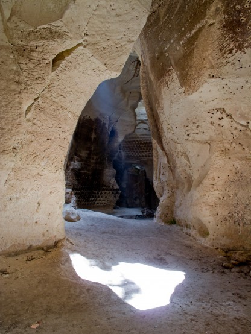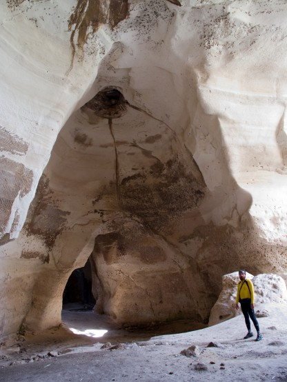
Пещеры Луизит
После утреннего дождика глинистый грунт активно прилипал к покрышкам, можно себе представить, что бы было после хорошего дождя. . . но нам повезло.
Выехали из парка на холмистую безлесную местность. Колокольные пещеры попадаются буквально на каждом километре. Отдельные холмы требуют напряжения сил. Андрей преимущественно идет в гору пешком - бережет колени. Я наоборот заезжаю почти во все подъемы, зато на спусках Андрей меня обгоняет.
Перекусили на заправке Бейт Гурвин фалафелем - вкуснятина.
Следующий пункт программы пещерный комплекс Бейт Гурвин, который, в отличие от Луизита, напротив полностью ориентирован и подготовлен на туристов.
К самому комплексу мы подъехали ровно в 16.00 и были почти уверены, что развернемся перед закрытыми воротами, так как именно в это время он должен был закрываться. Однако, все оказалось открыто и практически безлюдно. Для приличия мы поискали возможность купить билеты, но никаких признаков кассы не обнаружили и беспрепятственно направились осматривать пещеры. Первая группа пещер напоминает Лузит, если его расчистить от завалов. Огромные залы, сводчатые потолки, все очень чистенько и аккуратно.
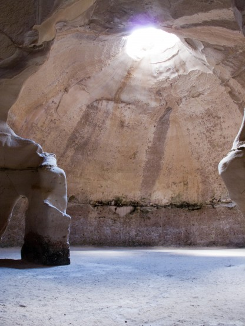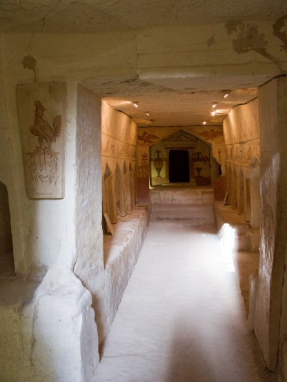
Пещеры Бейт-Гурвин
Решили не тратить много времени на осмотр и двинулись дальше. Еще дома, разглядывая карту, я наметил пунктирчик соединяющий первый пещерный комплекс со вторым. Можно было, конечно, объехать по асфальту, но у нас же грунтовый поход, тем более что так короче.
Пунктир оказалось пешеходной тропой с интересными воротами, открывающимися вовнутрь, чтобы коровы не убежали. Тропа достаточно сложная для езды на велосипеде, тем более что мы ехали по ней вверх. В качестве бонуса попутно осмотрели развалины старой базилики.
Вторая группа пещер оказалась еще интересней. Тут и пещера-колумбарий (в которой раньше разводили голубей) и пещера-маслодавильня и древний накопитель для воды и склеп - очень разнообразные и не похожие друг на друга пещеры. Рядом с ними есть кран с питьевой водой. Еще один кран рядом с автомобильной стоянкой. Кстати, недалеко от этой стоянки вполне можно поставить палатку, но мы решили ехать дальше.
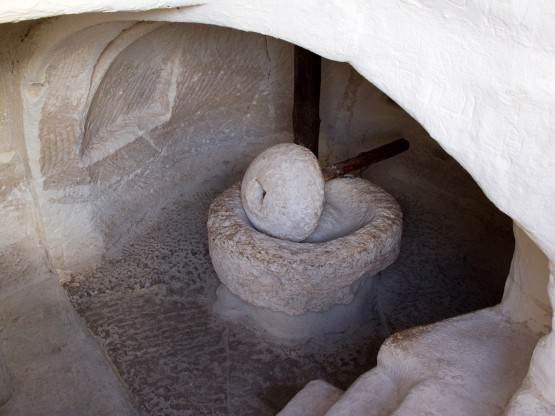
Здесь ослик ходил по кругу и дробил оливки
Пресс для выжимания масла
Может быть и к лучшему, так как дальше не было ничего интересного. Виноградники на многие километры и тракторные проезды между ними. Представляю, какая тут грязь после дождя, но нам повезло и было сухо.
Ставить палатку прямо среди виноградников не хотелось, а они все не кончались, так что наш ходовой день затянулся до глубокой ночи.
Палатку поставили сразу за границей гранатовых посадок в чистом поле. Бурбулятор топили гранатовыми ветками - отлично горят. Ночью было достаточно холодно.
Дневной пробег 42, 7 км, набор высоты 806 метров
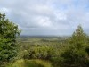 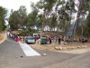 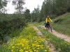 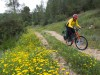 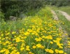 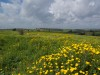  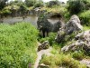 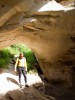 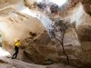 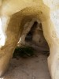 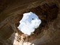 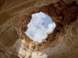 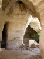 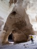 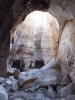 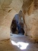 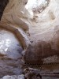 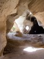 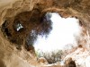 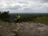 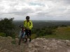 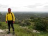 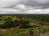 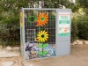 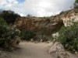 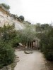 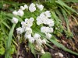 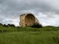 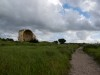
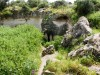 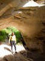 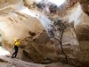 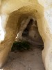 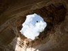 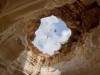 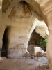 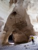 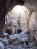 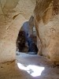 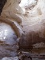 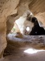 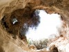 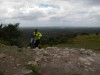 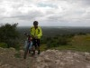 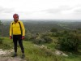 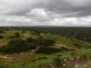 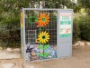 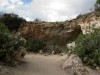 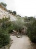 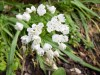 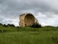 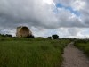  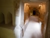 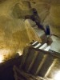 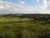
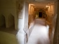 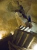 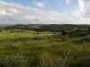  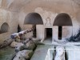 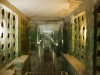 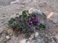
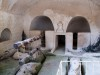 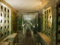 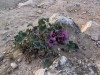
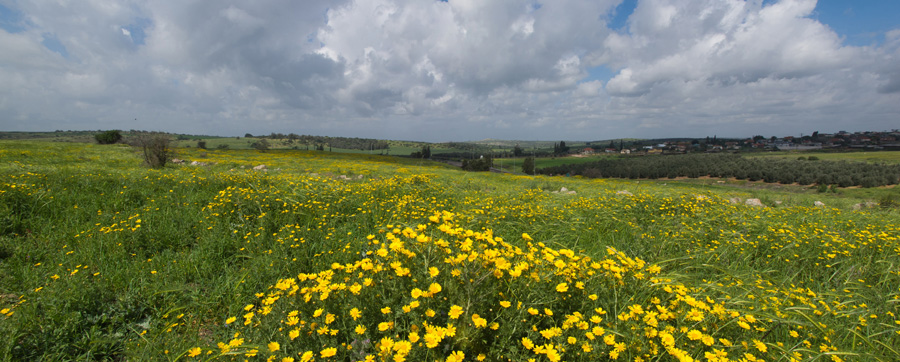